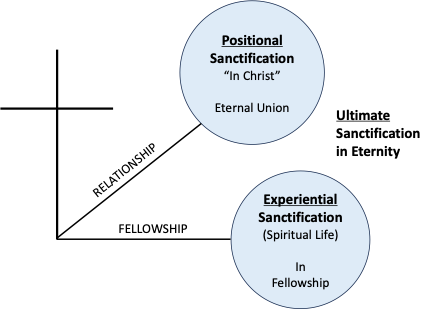

Austin Bible Church
Sanctification describes the means whereby God the Father makes the believer more and more like His Son, the Lord Jesus Christ. Sanctification is grace in function. In 1 Corinthians 1:2, “sanctified” ἁγιάζω (hagiazō) in the Greek and means to be set apart unto God. This Greek word is the root word for other English words such as holy, holiness, sanctification, consecrate, and sanctify. The Church Age believer is called a saint or one set apart.
“To the church of God which is at Corinth, to those who have been sanctified in Christ Jesus, saints by calling, with all who in every place call on the name of our Lord Jesus Christ, their Lord and ours:” (1 Corinthians 1:2, NASB)
The agents of sanctification are always the work of God, not man. God the Son is the provision through His work on the Cross. God the Holy Spirit provided the means or empowerment of sanctification. Heb. 10:10-14; 1 Peter 1:2.
“By this will we have been sanctified through the offering of the body of Jesus Christ once for all. Every priest stands daily ministering and offering time after time the same sacrifices, which can never take away sins; but He, having offered one sacrifice for sins for all time, SAT DOWN AT THE RIGHT HAND OF GOD, waiting from that time onward UNTIL HIS ENEMIES BE MADE A FOOTSTOOL FOR HIS FEET. For by one offering He has perfected for all time those who are sanctified.” (Hebrews 10:10-14, NASB)
“according to the foreknowledge of God the Father, by the sanctifying work of the Spirit, to obey Jesus Christ and be sprinkled with His blood: May grace and peace be yours in the fullest measure.” (1 Peter 1:2, NASB)
The three categories of sanctification for the believer are Positional, Experiential, and Ultimate Sanctification as illustrated in the diagram below. Rom. 8:29-30.
“For those whom He foreknew, He also predestined to become conformed to the image of His Son, so that He would be the firstborn among many brethren; and these whom He predestined, He also called; and these whom He called, He also justified; and these whom He justified, He also glorified.” (Romans 8:29-30, NASB)

Positional Sanctification
Positional sanctification is God the Holy Spirit placing the believer into union with Christ at the point of salvation. This is also called the Baptism of the Spirit. 1 Cor. 1:2; 1 Cor. 1:30; 1 Cor. 6:11; 1 Peter 1:2; Heb. 10:10; Heb. 10:14; Heb. 13:12; 2 Thess. 2:13. See category on Baptism of the Holy Spirit.
“To the church of God which is at Corinth, to those who have been sanctified in Christ Jesus, saints by calling, with all who in every place call on the name of our Lord Jesus Christ, their Lord and ours:” (1 Corinthians 1:2, NASB)
“according to the foreknowledge of God the Father, by the sanctifying work of the Spirit, to obey Jesus Christ and be sprinkled with His blood: May grace and peace be yours in the fullest measure.” (1 Peter 1:2, NASB)
“For by one offering He has perfected for all time those who are sanctified.” (Hebrews 10:14, NASB)
“But we should always give thanks to God for you, brethren beloved by the Lord, because God has chosen you from the beginning for salvation through sanctification by the Spirit and faith in the truth.” (2 Thessalonians 2:13, NASB)
Positional sanctification makes every Church Age believer in union with Christ positionally higher than angels. Heb. 1:2-4; Heb. 2:8-9.
“in these last days has spoken to us in His Son, whom He appointed heir of all things, through whom also He made the world. And He is the radiance of His glory and the exact representation of His nature, and upholds all things by the word of His power. When He had made purification of sins, He sat down at the right hand of the Majesty on high, having become as much better than the angels, as He has inherited a more excellent name than they.” (Hebrews 1:2-4, NASB)
“YOU HAVE PUT ALL THINGS IN SUBJECTION UNDER HIS FEET." For in subjecting all things to him, He left nothing that is not subject to him. But now we do not yet see all things subjected to him. But we do see Him who was made for a little while lower than the angels, namely, Jesus, because of the suffering of death crowned with glory and honor, so that by the grace of God He might taste death for everyone.” (Hebrews 2:8-9, NASB)
Experiential or Progressive Sanctification
Experiential sanctification refers to the spiritual life after salvation - being in fellowship with God through the filling of the Holy Spirit. Experiential sanctification is progressive and emphasizes the Christian walk or the spiritual life. God’s Word provides the thinking of Jesus Christ so that when the believer grows spiritually, the thinking of Jesus Christ accumulates in the right lobe of the believer’s soul as epignosis Bible doctrine. As the believer matures spiritually, their thinking is progressively like that of our Lord during His incarnation. 1 Thess. 4:3; Rom. 6; John 17:17; 2 Peter 3:18; Eph. 5:26.
“For this is the will of God, your sanctification; that is, that you abstain from sexual immorality;” (1 Thessalonians 4:3, NASB)
“"Sanctify them in the truth; Your word is truth.” (John 17:17, NASB)
“but grow in the grace and knowledge of our Lord and Savior Jesus Christ. To Him be the glory, both now and to the day of eternity. Amen.” (2 Peter 3:18, NASB)
“so that He might sanctify her, having cleansed her by the washing of water with the word,” (Ephesians 5:26, NASB)
Experiential sanctification results from consistent confession of known sins to God the Father using 1 John 1:9 that results in the filling of the Holy Spirit. The believer consistently taking in and applying Bible doctrine produces spiritual growth. Eph. 5:18; 2 Tim. 2:15; 2 Tim. 3:16-17; James 4:8; Heb. 10:25.
“And do not get drunk with wine, for that is dissipation, but be filled with the Spirit,” (Ephesians 5:18, NASB)
“Be diligent to present yourself approved to God as a workman who does not need to be ashamed, accurately handling the word of truth.” (2 Timothy 2:15, NASB)
“All Scripture is inspired by God and profitable for teaching, for reproof, for correction, for training in righteousness; so that the man of God may be adequate, equipped for every good work.” (2 Timothy 3:16-17, NASB)
“Draw near to God and He will draw near to you. Cleanse your hands, you sinners; and purify your hearts, you double-minded.” (James 4:8, NASB)
“not forsaking our own assembling together, as is the habit of some, but encouraging one another; and all the more as you see the day drawing near.” (Hebrews 10:25, NASB)
Ultimate Sanctification
Ultimate sanctification refers to every Church Age believer receives an everlasting resurrection bodies at the Rapture of the Church. 1 John 3:1-2; 1 Cor. 15:51-57; Phil. 3:21.
“See how great a love the Father has bestowed on us, that we would be called children of God; and such we are. For this reason the world does not know us, because it did not know Him. Beloved, now we are children of God, and it has not appeared as yet what we will be. We know that when He appears, we will be like Him, because we will see Him just as He is.” (1 John 3:1-2, NASB)
“Behold, I tell you a mystery; we will not all sleep, but we will all be changed, in a moment, in the twinkling of an eye, at the last trumpet; for the trumpet will sound, and the dead will be raised imperishable, and we will be changed. For this perishable must put on the imperishable, and this mortal must put on immortality. But when this perishable will have put on the imperishable, and this mortal will have put on immortality, then will come about the saying that is written, "DEATH IS SWALLOWED UP in victory. "O DEATH, WHERE IS YOUR VICTORY? O DEATH, WHERE IS YOUR STING?" The sting of death is sin, and the power of sin is the law; but thanks be to God, who gives us the victory through our Lord Jesus Christ.” (1 Corinthians 15:51-57, NASB)
“who will transform the body of our humble state into conformity with the body of His glory, by the exertion of the power that He has even to subject all things to Himself.” (Philippians 3:21, NASB)